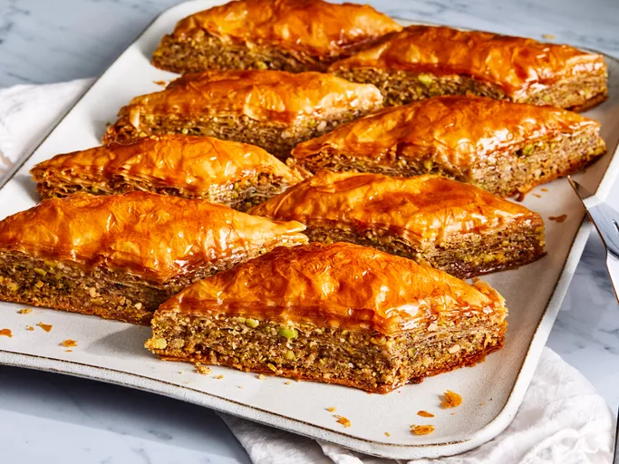

Baklava
Home

Description
Believe it or not, you can make Greek restaurant-worthy baklava in the comfort of your own kitchen — and it's actually not that hard! This top-rated baklava recipe, which is surprisingly approachable for beginner bakers, has racked up almost 2,000 rave reviews from the Allrecipes community.
What is Baklava?
Baklava is a traditional pastry known for its sweet, rich flavor and flaky texture. It consists of layers of crisp phyllo (or filo) dough, cinnamon-spiced nuts, and a honey syrup.
Baklava Origins
Pronounce "baklava" like "bah-klah-vah." The stress is placed on the first syllable. Though baklava is often associated with Greek restaurants now, its exact origins are unclear. Food historians think modern baklava may have been invented in Turkey during the Ottoman Empire, then modified in Greece. However, the technique of layering unleavened bread with nuts and honey can be traced back as far as the 8th century B.C.E. during the Assyrian Empire.
Ingredients
For this recipe you will need the following ingredients
- 1 cup butter, melted
- 1 pound chopped nuts
- 1 teaspoon ground cinnamon
- 1 (16 ounce) package phyllo dough, thawed overnight
- 1 cup water
- 1 cup white sugar
- 0.5 cup honey
- 1 teaspoon vanilla extract
Steps
These are the steps to make the dish
- Gather all ingredients. Preheat the oven to 350 degrees F(175 degrees C). Butter the bottoms and sides of a 9x13-inch pan.
- Chop nuts; toss with cinnamon in a bowl. Set aside.
- Unroll phyllo dough. Cut whole stack in half to fit pan. Cover phyllo with a dampened cloth to keep from drying out as you work. Place two sheets of dough in pan, thoroughly brush with butter using a pastry brush. Repeat until you have 8 sheets layered.
- Sprinkle 2 to 3 tablespoons cinnamon-nut mixture on top; layer with two sheets of dough, brush with melted butter, and top with more cinnamon-nut mixture. Continue layering in this way until nut mixture is used up, finishing with a final layer of phyllo about 6 to 8 sheets deep.
- Cut into diamond or square shapes all the way to the bottom of the pan using a sharp knife. You may cut into 4 long rows then make diagonal cuts. Bake until baklava is golden and crisp, about 50 minutes.
- Make sauce while baklava is baking. Boil sugar and water until sugar is melted. Add honey and vanilla; simmer for about 20 minutes.
- Remove baklava from the oven; immediately spoon sauce over top. Cool.
- Once completely cooled, serve baklava in cupcake papers to make it easier to handle.
- Enjoy!